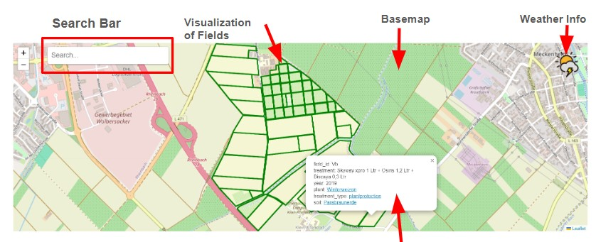

← Back to portfolio
Web GIS
Course project: Geo-Information Management in Interdisciplinary Research Context (Uni Bonn)
Role: Implementation of the web map and Java backend integration (WFS + database + ontology)
Overview
- Goal – Provide an interactive Web GIS for the experimental fields at Campus Klein Altendorf, allowing researchers to explore field trials spatially and access rich metadata.
- Data – Field geometries from a GeoServer WFS (field layer) and non-spatial attributes from a relational database (fields, species, treatments).
- Workflow – Fetch WFS + DB data → combine into GeoJSON → display in a web map with popups, ontology links and search.
- Result – A prototype Web GIS where users can click on fields to see crop information, open ontology descriptions and search trials through a map interface.

Data Integration
- Used a Web Feature Service (WFS) from GeoServer to obtain field geometries and IDs for the Campus Klein Altendorf experimental plots.
- Joined WFS features with attributes from database tables, including fields, species and treatments.
- Combined spatial and non-spatial data into a GeoJSON structure (geometry + properties) consumed directly by the web map.
Web Map & Backend
- Implemented the backend in Java to:
- Request WFS data and parse geometries.
- Query the relational database and merge selected columns into feature properties.
- Output a cleaned GeoJSON feed for the client map.
- Built the web map front-end with a JavaScript mapping library (Leaflet-style layout), including:
- Base map layer for context.
- Field polygons styled by plot boundaries.
- Popups showing crop, treatment and field attributes.
Interface & Interactions
- Linked popup content to an ontology service so users can open concept descriptions (e.g. crop or treatment terms) in a separate pane.
- Implemented keyword search that filters or highlights fields based on attributes.

Impact
- Provides a single entry point where researchers can explore experimental fields spatially and see key attributes at a glance.
- Demonstrates how WFS + relational databases + ontologies can be combined into a FAIR, discoverable geospatial data system.
- Showcases full-stack Web GIS skills: backend integration, GeoJSON generation, interactive map design and attribute-driven exploration.